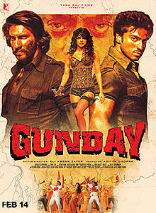
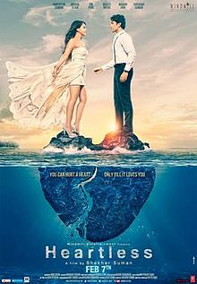
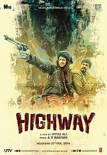

GUNDAY
Gunday (English: Outlaws or Goons) is a 2014 Indian action crime thriller film written and directed by Ali Abbas Zafar and produced by Aditya Chopra. The film featured Ranveer Singh, Arjun Kapoor and Priyanka Chopra as the lead roles and Irrfan Khan playing the villain.The film starts off in the 1970s, with a young Bikram and Bala, who become gun carriers and coal bandits. They ultimately grow up to become the most powerful goons of Calcutta.The film released on 14 February 2014.
Shaadi Ke Side Effects
Shaadi Ke Side Effects (English: The Side Effects of Marriage) is an upcoming Bollywood movie. The film is directed by Saket Chaudhary and features Farhan Akhtar, Vidya Balan, Ram Kapoor, Vir Das and Hariharan. The film is produced by Balaji Motion Pictures and Pritish Nandy Communications.[1] The trailer of the film was released on 28th October 2013 which was coldly received by Critics and was unable to create the desired buzz for the movie. [2] The music of the film was released on 8 February 2014 however it was also received with mixed to negative response from critics. [3] The film is scheduled for release on 28 February 2014 which is also the date of India cricket team encounter with Sri lanka in Asia cup. In trade experts opinion Asia cup being played during the first week of movies release is going to effect the movies business specially match with Pakistan on first weekends Sunday is going to effect movies business

HEARTLESS
Heartless is a 2014 Bollywood medical thriller film directed by Shekhar Suman.[Shekhar Suman also stars in the film along with his son, Adhyayan Suman. The film also features Ariana Ayam, Deepti Naval, Om Puri and Madan Jain amongst others. It released on 7 February 2014, to mixed reviews from critics apparently.The film focuses on anesthesia awareness, a medical condition where a patient cannot move his body, but can hear and understand all that's happening around him/her.Some critics have noticed similarities between the film and the 2007 Hollywood medical thriller Awake

Highway
Highway is a 2014 Bollywood drama film written and directed by Imtiaz Ali and produced by Sajid Nadiadwala. Imtiaz Ali has made his debut as a producer through his banner Window Seat Films. The film stars Randeep Hooda and Alia Bhatt in the lead roles. Released worldwide on 21 February 2014,the film was screened in the Panorama section of the 2014 Berlin International Film Festival.The film outlines the story of a young woman who is kidnapped right before her wedding and held for ransom wherein she begins to develop a strange bond with her kidnapper. The film loosely portrays Stockholm syndrome.